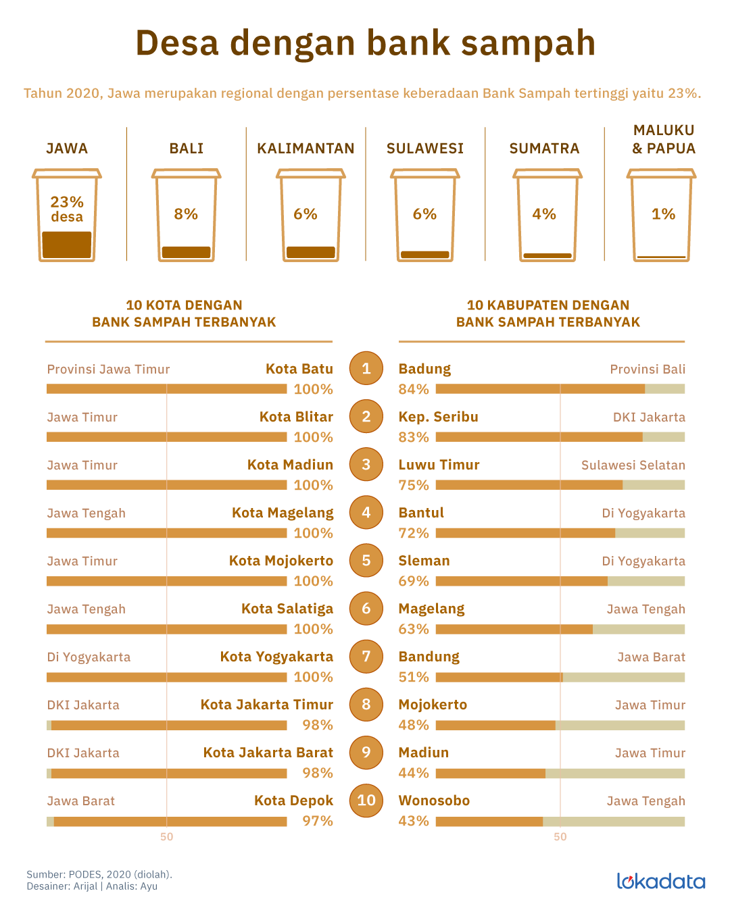

Selamat Datang di Web Informasi Kegiatan Bank Sampah
Mari bersama-sama menjaga lingkungan dengan mengelola sampah secara bijak dan bertanggung jawab!
Latar Belakang
Salah satu permasalahan besar yang dialami kota-kota besar di Indonesia adalah persampahan. Setiap tahunnya, dapat dipastikan volume sampah akan selalu bertambah seiring dengan pola konsumerisme masyarakat yang semakin meningkat. Kementerian Lingkungan Hidup mencatat rata-rata penduduk Indonesia menghasilkan sekitar 2,5 liter sampah per hari atau 625 juta liter dari jumlah total penduduk. Menurut Statistik Sampah Indonesia (2012), jumlah sampah yang muncul di seluruh Indonesia mencapai 38,5 juta ton per tahun dengan dominan sampah tersebut berada di Pulau Jawa (21,2 juta ton per tahun). Sebagai salah satu solusi untuk mengatasi masalah tersebut, Kementerian Lingkungan Hidup melakukan upaya pengembangan Bank Sampah. Harapannya akan dapat mengurangi jumlah sampah yang diangkut ke TPA. Pembangunan bank sampah ini merupakan momentum awal dalam membina kesadaran kolektif masyarakat untuk mulai memilah, mendaur-ulang, dan memanfaatkan sampah. Dengan adanya Bank Sampah, maka produsen dapat melakukan kerja sama dengan Bank Sampah yang ada agar dapat mengolah sampah dari produk yang dihasilkannya sesuai dengan amanat PP tersebut.
Pengelolaan Sampah
Pengelolaan sampah merupakan bagian dari pengelolaan kebersihan. Pengertian bersih sebenarnya bukan hanya berarti tidak adanya sampah, melainkan juga mengandung pengertian yang mengarah ke tinjauan estetika. Terdapat tiga hal yang menjadi perhatian utama dan yang harus dipertimbangkan secara matang dalam pengelolaan sampah, yaitu: identifikasi kondisi sistem pengelolaan sampah yang telah ada; definisi baik dan benar dalam hal pengelolaan sampah; dan pola kebijaksanaan pembinaan dan pengembangan. Pengelolaan sampah adalah semua kegiatan yang dilakukan untuk menangani sampah sejak ditimbulkan sampai dengan pembuangan akhir. Secara garis besar, kegiatan pengelolaan sampah meliputi: pengendalian timbulan sampah, pengumpulan sampah, pengangkutan, pengolahan dan pembuangan akhir (Sejati, 2004). Penanganan sampah tidaklah mudah, melainkan sangat kompleks, karena mencakup aspek teknis, ekonomi dan sosiopolitis. Pengelolaan sampah adalah usaha untuk mengatur atau mengelola sampah dari proses pewadahan, pengumpulan, pemindahan, pengangkutan, pengolahan, hingga pembuangan akhir (DPU Cipta Karya, 1993). Sistem pengelolaan sampah adalah proses pengelolaan sampah yang meliputi lima aspek. Kelima aspek tersebut berkaitan erat satu dengan yang lainnya membentuk satu kesatuan, sehingga upaya untuk meningkatkan pengelolaan persampahan harus meliputi berbagai sistem. Adapun aspek-aspek tersebut, yaitu: aspek kelembagaan, pembiayaan, pengaturan, peran serta masyarakat, dan teknik operasional. Masyarakat selaku penghasil sampah, berperan dalam mengurangi timbulan sampah maupun dalam penyediaan dana. Dan yang tak kalah pentingnya adalah dukungan regulasi yang menjadi payung hukum agar sistem dapat mencapai sasarannya secara efektif. Pengesahan Undang-Undang Nomor 18 Tahun 2008 tentang Pengelolaan Sampah, merupakan langkah utama dalam penerapan manajemen persampahan, terutama dalam aspek pengaturan.

Bank Sampah di Indonesia
UU No. 18 Tahun 2008 tentang Pengelolaan Sampah mengatakan bahwa pengelolaan sampah rumah tangga, terdiri dari pengurangan sampah sampah dan penanganan sampah. Pengurangan sampah yang dimaksud, meliputi: pembatasan timbulan sampah, daur ulang sampah dan pemanfaatan kembali sampah. Tujuan utama pendirian Bank Sampah adalah untuk membantu menangani pengolahan sampah di Indonesia. Tujuan selanjutnya adalah untuk menyadarkan masyarakat akan lingkungan yang sehat, rapi, dan bersih. Bank Sampah juga didirikan untuk mengubah sampah menjadi sesuatu yang lebih berguna dalam masyarakat, misalnya untuk kerajinan dan pupuk yang memiliki nilai ekonomis. Bank sampah adalah tempat untuk mengumpulkan berbagai macam sampah yang telah dipisah- pisahkan sesuai dengan jenisnya untuk disetorkan ke tempat bengkel kerja lingkungan, hasil setoran sampah akan ditabung dan dapat diambil atau dicairkan dalam jangka waktu tertentu dengan mengadopsi prinsip perbankan, jadi penyetor sampah akan mendapat buku Tabungan. Sampah-sampah yang disetorkan ke bank sampah dibedakan menjadi beberapa jenis, misalnya: sampah organik, seperti potongan sayuran atau sisa masakan; mapun nonorganik seperti plastik, besi, dan lainnya. Bank Sampah menetapkan harga beli untuk masing-masing jenis sampah tersebut. Sampah yang masih dapat di daur ulang seperti bahan organik dapat dimanfaatkan untuk kompos ataupun biogas. Sedangkan bahan nonorganik didaur ulang menjadi berbagai perabotan seperti tas, sendal, dan lainnya.
Data potensi desa (PODES) 2020 mencatat, dari 84 ribu desa dan/atau kelurahan di Indonesia, baru 10 persen yang memiliki Bank sampah. Sementara 90 persen tidak memiliki bank sampah. sumber Lokadata.com
Daftar 10 Kota dan Desa dengan bank sampah terbanyak, berdasarkan sumber Lokadata / Lokadata
Kegiatan Bank Sampah Di Lingkungan Sekitar


Kelompok 4
Nama Anggota 1
Nama Anggota 2
Nama Anggota 3

Nama Anggota 4
Nama Anggota 4
Nama Anggota 4
Nama Anggota 4